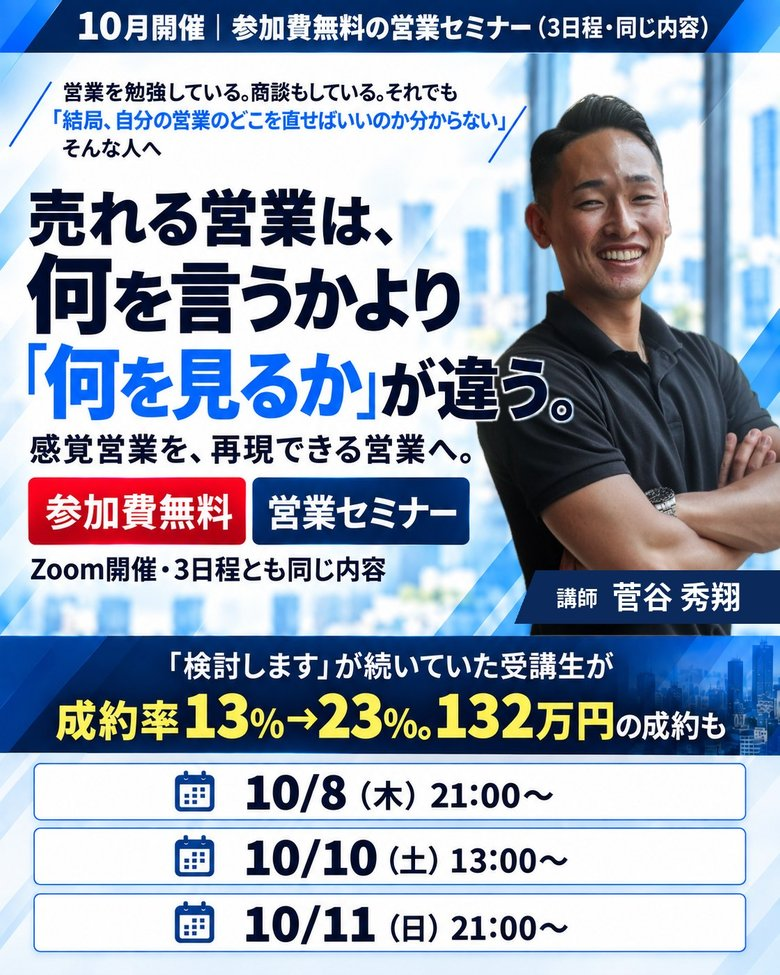
入力はお名前と日程だけ。LINEの中で申し込みが終わります
最後に個別サポートのご案内を少しだけしますが、
申し込む必要はありません。無理な売り込みもしません。
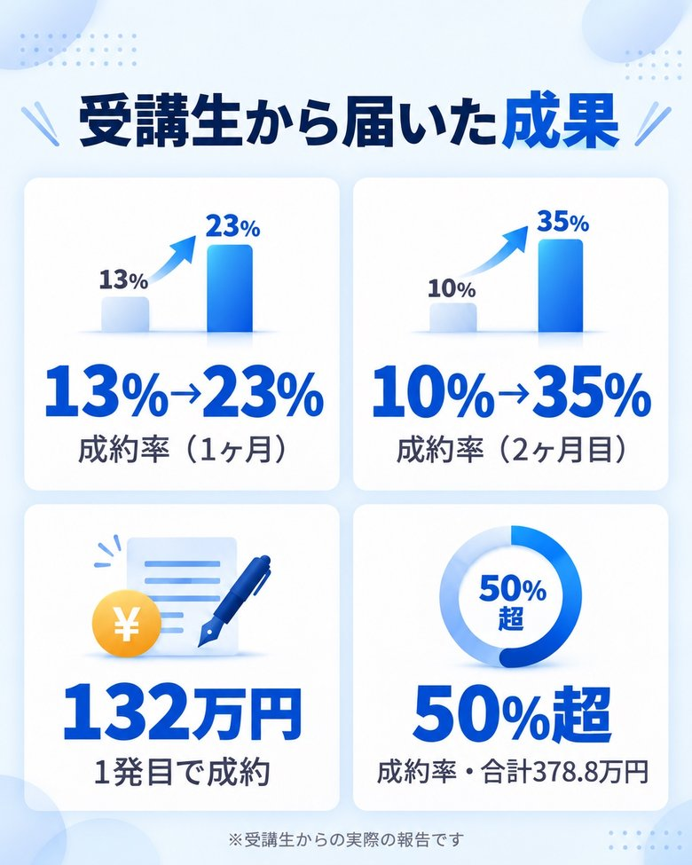
1ヶ月で、成約率が 13％→23％ に
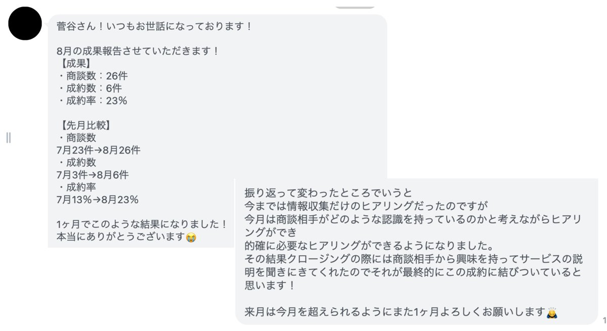
今までは情報収集だけのヒアリングだったのですが、今月は商談相手がどのような認識を持っているのかと考えながらヒアリングができ、的確に必要なヒアリングができるようになりました。
まさかの1発目で 132万円 成約
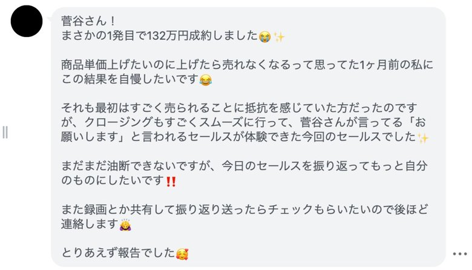
商品単価上げたいのに上げたら売れなくなるって思ってた1ヶ月前の私に、この結果を自慢したいです
※アイコンは加工しています。「菅谷さん」は講師の名前です
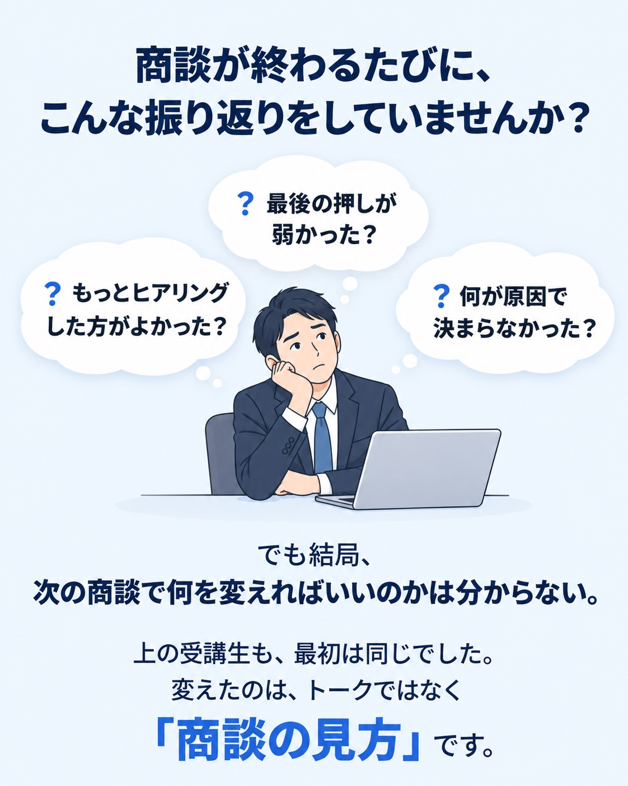
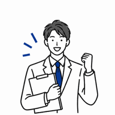
やすのぶさん集客コンサルタント
成約率 10％ → 35％（2ヶ月目）
31件中11件の成約・売上250万円
現状を聞いて提案する営業から、気づいていない問題に気づいてもらってから提案する営業へ。切り返しを勉強すること自体をやめた。
さちさん結婚式 前撮り営業
成約率 20％ → 40％
商品説明がメインの商談から、ヒアリングがメインの商談へ。話す順番を変えただけで成約率が2倍に。
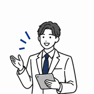
まるさんマーケティングコンサルタント
売上 200万円 → 600万円（半年後）
「まだ必要性を感じていない人」にも売れる商談の組み立てに。
※全員が同じ結果になるという話ではありません
その1
「一度検討します」と言われると、「もっと上手く切り返せばよかったのかな」「最後の押しが弱かったのかな」と考える人は多いです。でも、最後に出た言葉だけを見ても、本当の失注原因は分からないことがあります。もっと前の段階で、すでに商談がズレていた可能性があるからです。
セミナーで解説：どこからズレていたのか。何を見れば、それを判断できるのか。
その2
質問した。悩みも聞いた。相手にもたくさん話してもらった。それでも売れない。大事なのは、何を質問したかだけではありません。その回答から、何を見るのか。何に気づくのか。次に何を確認するのか。売れる営業は、同じ回答を聞いても見ているものが違います。
セミナーで解説：売れる営業が、商談中に何を見ながら話を聞いているのか。
その3
AさんとBさん。最後に言われた言葉は、どちらも「一度検討します」。でも、2人ともクロージングを改善すればいいとは限りません。Aさんはかなり早い段階でズレていたかもしれないし、Bさんはあるところから止まっていたかもしれない。表面に出ている断り文句が同じでも、本当に直す場所は人によって違います。
セミナーで解説：商談を見る「4つのチェックポイント」で、自分の商談のどこを直せばいいかを整理します。
その4
商品の良さを説明する。メリットを伝える。「今やった方がいいですよ」と伝える。でも、営業側が必要だと思っていることと、相手自身が「これは変えた方がいい」と感じていることは別です。だから、必要性を一生懸命説明しても、相手が動かないことがあります。
セミナーで解説：相手自身が「これは変えた方がいい」と思う状態は、どうやって作られるのか。
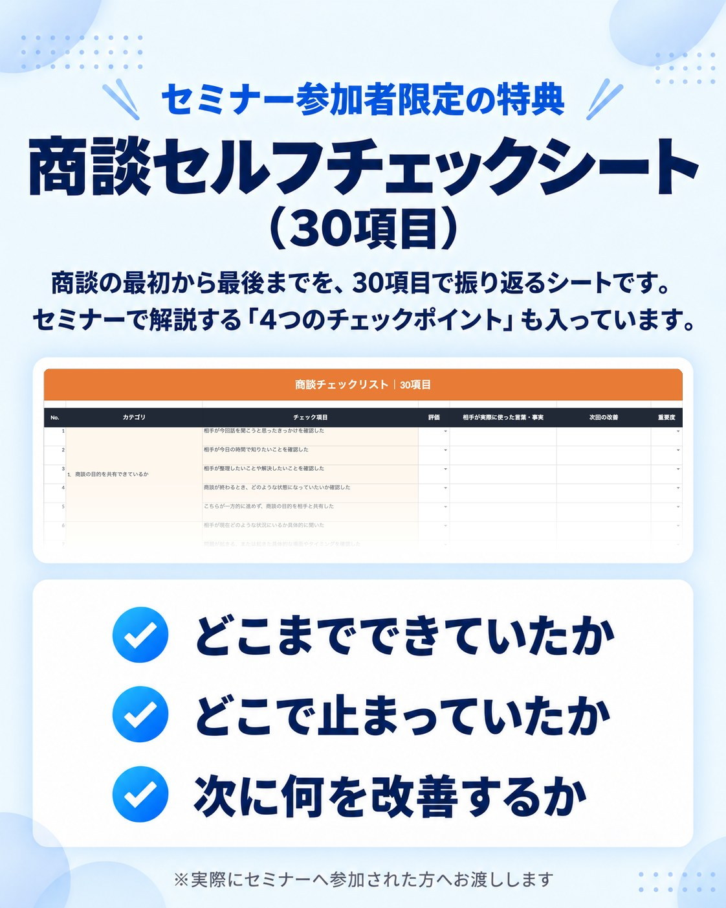
入力はお名前と日程だけ。LINEの中で申し込みが終わります
最後に個別サポートのご案内を少しだけしますが、
申し込む必要はありません。無理な売り込みもしません。
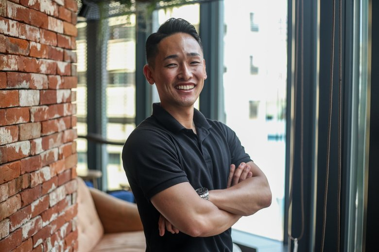
菅谷 秀翔すがや しゅうと
魚を捌く仕事からキャリアをスタート。個人事業主として、採用特化のSNSマーケティングとコーチング業を経験。営業未経験から始めて1年後に、無形高単価サービスで月1,800万円の売上を達成。これまでに20商品以上の営業を実践してきました。
今は自分で商談に出るだけでなく、受講生の実際の商談を見ながら「なぜ成約したのか」「なぜ失注したのか」「どこを直せば結果が変わるのか」を一緒に分析しています。
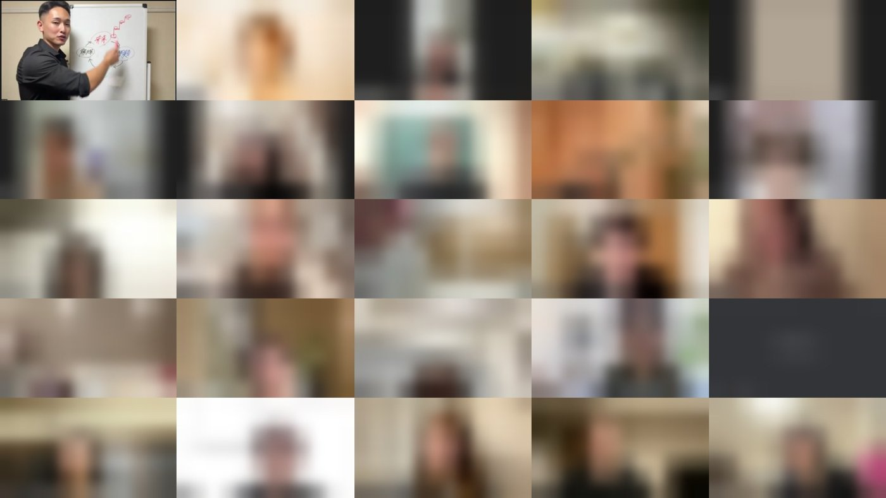
理由1
営業未経験から、1年で月1,800万。机の上の理論ではなく、自分の商談で試して、結果が出たやり方だけをお伝えします。
理由2
商品が変わると使えなくなるトークではなく、商品が変わっても使える「見方」をお伝えします。コンサル・講師・前撮り・人材紹介と、職業も商品もバラバラな受講生が結果を出しているのはそのためです。
理由3
トークを覚えて終わりではありません。「今回はここで止まっていた。だから次はここを変える」と、自分の商談を自分で直せる状態を目指します。
理由は2つあります。
1つ目は、営業を勉強しているのに「どこを直せばいいのか分からない」と止まっている人が、本当に多いからです。トークやノウハウを増やす前に、まず「商談の見方」を知ってほしい。そう思って、このセミナーを無料で開くことにしました。
2つ目は、一緒に組める人と出会いたいからです。僕は今も、営業代行として自分で商談に出ています。いい商品やサービスを持っている方と、将来一緒に組んで売っていけたら。このセミナーを、そんな出会いのきっかけにもしたいと思っています。
セミナーの最後に、個別サポートのご案内も少しだけします。ただ、申し込む必要は一切ありません。無理な売り込みもしません。「商談の見方が分かった」と持ち帰ってもらえれば、それで十分です。
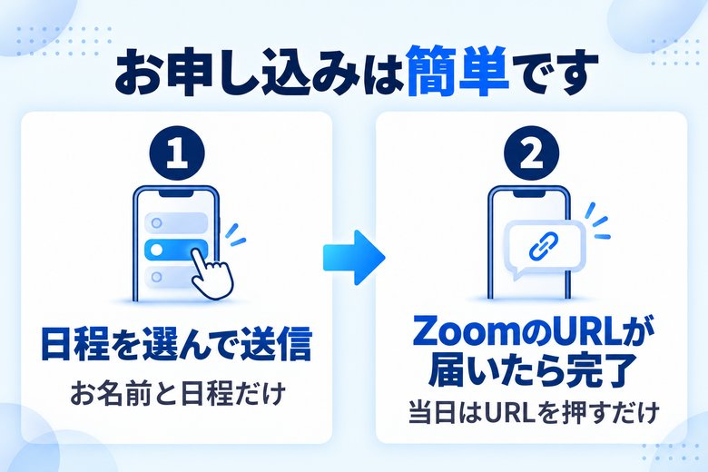
売れる営業は、
感覚営業を、再現できる営業へ。
無料営業セミナーZoom開催
| 日程 | 10月8日（木）21:00〜 10月10日（土）13:00〜 10月11日（日）21:00〜 ※3日程とも同じ内容です ※各回、開始時刻で受付を終了します |
|---|---|
| 会場 | Zoom（オンライン） |
| 講師 | 菅谷 秀翔 |
| 参加費 | 無料 |
| 特典 | 商談セルフチェックシート |
▼ 参加する日程を選んで申し込む ▼
各回、開始時刻で受付を終了します
入力はお名前と日程だけ。LINEの中で申し込みが終わります
最後に個別サポートのご案内を少しだけしますが、
申し込む必要はありません。無理な売り込みもしません。
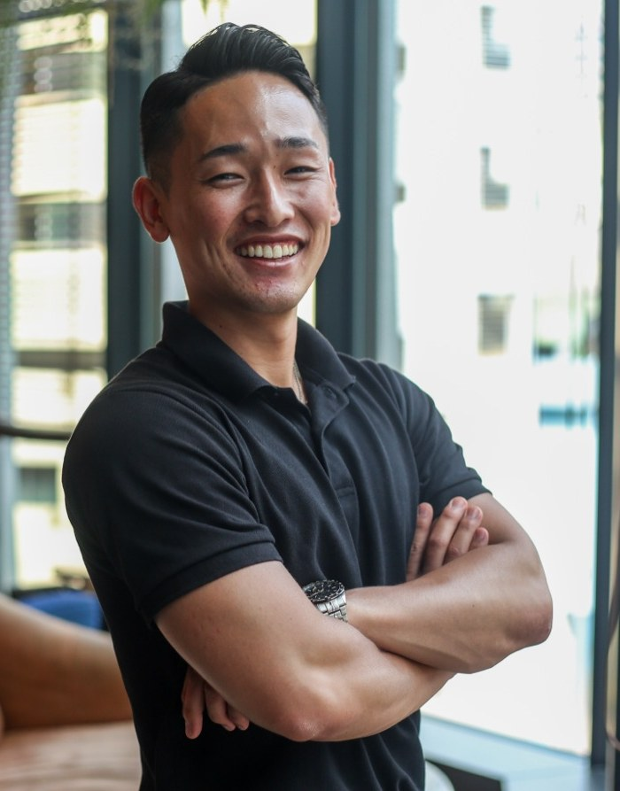
持ち帰ってほしいのは、
営業テクニックの数ではありません。
「今の自分はここを直せばいい」
と分かる状態です。
「もっと営業を勉強しないと」から、
「次はここを変える」へ。
当日、お会いできるのを楽しみにしています。
講師 菅谷 秀翔
入力はお名前と日程だけ。LINEの中で申し込みが終わります
最後に個別サポートのご案内を少しだけしますが、
申し込む必要はありません。無理な売り込みもしません。